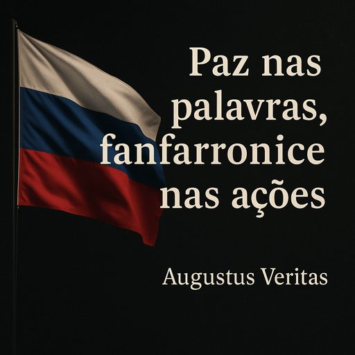

Publicado em 2025-06-22 09:35:45
Num palco cada vez mais instável, onde os actores globais se reposicionam, Vladimir Putin continua a desfilar como se estivesse num desfile de vitórias imaginárias. O antigo homem da KGB, que outrora prometia devolver à Rússia o estatuto de superpotência, hoje revela-se mais como um maestro de fanfarronice do que de estratégia eficaz.
Com a Ucrânia a resistir ao "passeio militar" que prometera ser rápido e decisivo, o Kremlin tenta manter a pose, como um leão a rugir de dentro de uma jaula enferrujada. Enquanto isso, os aliados de conveniência de Moscovo vão sendo abatidos, um a um: o Irão, com as suas ambições nucleares e redes de terrorismo internacional, foi recentemente alvo de ataques cirúrgicos por parte de Israel e, agora, dos EUA.
Os drones que a Rússia lança sobre a Ucrânia? Fabricados em solo iraniano. O mesmo solo que arde hoje sob o silêncio atrópico de Moscovo, que assiste, sem poder de reacção, à destruição sistemática das suas fontes logísticas.
Putin prometia um novo século russo. O que vemos é uma espécie de opereta trágica, onde os actores secundários se eclipsam e o protagonista insiste em declamar falas de grandeza enquanto o cenário desaba.
E o que faz a Europa? Assiste, entre cochilos e notas diplomáticas redigidas com a emoção de um burocrata em coma. E os EUA? Acordaram tardiamente, mas mostraram que quando querem, agem.
Israel, sozinho, mostrou o caminho. A coragem, a eficiência e a determinação que faltam às grandes potências decadentes.
Neste tabuleiro geopolítico, Putin permanece como um jogador de xadrez que perdeu a rainha, mas finge controlar o jogo. E o mundo? O mundo assiste, espera, mas também se cansa dos espectáculos de vaidade travestida de liderança.
Como diria Hannah Arendt:
"O mal não é radical, é banal."
Talvez o fanfarrão de Moscovo já não seja temido. Apenas tolerado. Até cair com o peso da sua própria arrogância.